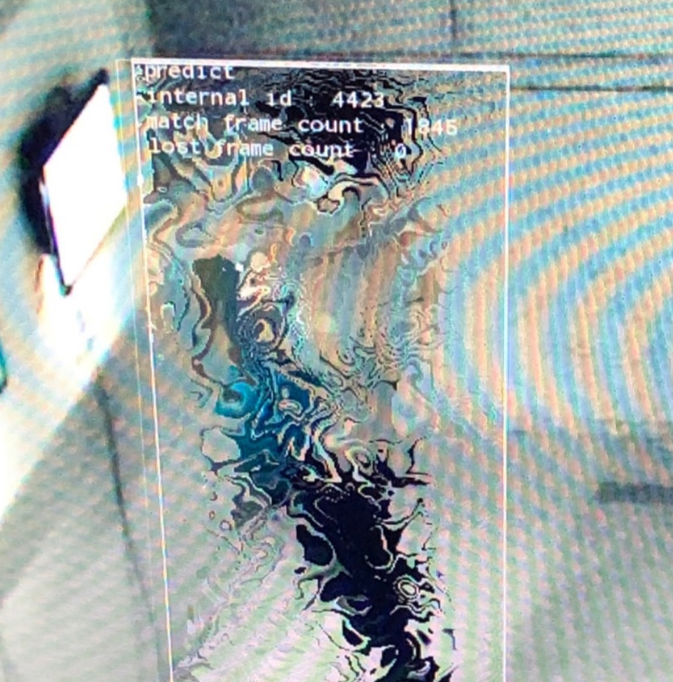

もぐらたたき
このたび、チーム5班では「もぐらたたき」を開発いたしました。ご使用の前に、取り扱い方、使用上の注意など、この「仕様書」をよくお読みいただいた上、正しい使用法でご愛用ください。
なお、この「仕様書」は大切に保管してください。
＜もくじ＞
● ~役割分担~
・サーバー...........下重 ・クライアント........矢島
| |
| |
・ゲームの GUI、プログラム.........見留、山内
| |
| |
・ゲームの仕様、何でも屋...佐藤、廣井
 | |
| |
チーム５班より
＜基本篇：操作方法について＞
マウス or
トラックパッド |
すべてのカーソルを移動を行います。 |
| 右クリック |
決定やモグラを叩くことができます。 |
| ctrl + C |
コマンドプロンプト(ターミナル）でプログラムを強制終了できる。 |
| |
| |
| |
| |
＜基本篇：ゲームの始め方＞
ゲームを始める前に
①「aserver.java」「aship.java」「aclient.java」「aproc.java」をダウンロードしてください。
②コマンドプロンプト(ターミナル)で「aserver.java」「aclient.java」をコンパイルしてください。
③ホストの人は「asever.java」を実行してください。
⑤クライアントの人は「aclient.java」を実行してください。
⑥クライアントの人は実行するとタイトル画面が表示されます。
タイトル画面について
| login |
host : UmiServer.javaを起動するコンピュータ名を入力
name : 好きな名前を入力 |
| logout |
exitメソッド用いてプログラム終了 |
ゲーム開始について
クライアント：「login」ボタンを押していただき、「host」に「aserver.java」を起動するコンピュータ名を入力と「name」 に好きな名前を入力してください。
最後に、OKボタンをクリックすることで「aserver」と接続されゲームが開始します。
＜もぐらたたき篇：もぐらたたき画面の見方＞
| score |
モグラを一匹叩くごとに、1点プラスされていきます。 |
| time |
制限時間の表示となっており、制限時間が残り5秒になると画面に表示されます。 |
| モグラ |
画面上にランダムに表示されます。 |
＜もぐらたたき篇：もぐらたたきのルール＞
「制限時間までに、もぐらを叩きまくってスコアを稼ぎまくれ！！🔥」
＜コード解説篇＞
aserver.java
- import javax.swing.*;
- import java.awt.*;
- import java.io.*;
- import java.net.*;
- import java.util.*;
- public class aserver extends JButton {
- static final int DEFAULT_PORT = 10000;//接続用ポート番号
- static ServerSocket serverSocket;
- static Vector connections;
- static Vector energy_v;
- static Hashtable userTable = null;
- static Random random = null;
- public static void addConnection(Socket s){
- if(connections == null){//初めてのコネクションの場合
- connections = new Vector();//connentionsベクターを作成
- }
- connections.addElement(s);
- }
- public static void deleteConnection(Socket s){
- if(connections != null){
- connections.removeElement(s);
- }
- }
- public static void LoginUser(String name){
- if(userTable == null){//登録用テーブルがないときは、新たに作成する
- userTable = new Hashtable();
- }
- if(random == null){//乱数の準備
- random = new Random();
- }
- userTable.put(name, new aship());
- System.out.println("login:"+name);
- System.out.flush();
- }
- public static void LogoutUser(String name){
- //サーバー側画面にログアウトするクライアントの名前を表示
- System.out.println("logout:"+name);
- System.out.flush();
- //登録用テーブルから項目を削除
- userTable.remove(name);
- }
- public static void m(String name) {
- System.out.println("押してますok");
- }
- //startInfoメソッド
- //STATコマンドを処理します
-
- public static int[] r = new int[2];
- public static int sec = 60;
-
- public static void mogura_repaint_respawn(PrintWriter pw){
-
- //r = Randompoint(new Random().nextInt(9));
-
- //現在の数値をクライアント側に送信
-
- System.out.println("サーバー値変更ありok");
- pw.println("Mogura_Respawn");
- if(userTable != null){
-
- //System.out.println("aaa");
- r = Randompoint(new Random().nextInt(9));
-
- pw.println(r[0] + " " + r[1] + " " + sec);
- }
- pw.println(".");
- System.out.println("サーバー値変更送信ok");
- pw.flush();
- }
-
-
- //モグラの再描画命令(値変更なし)を受けましたというメソッド
- public static void mogura_repaint(PrintWriter pw){
- //r = Randompoint(new Random().nextInt(9));
-
- //現在の数値をクライアント側に送信
-
- System.out.println("サーバー値変更なしok");
- pw.println("Mogura_Info");
- if(userTable != null){
-
- //System.out.println("aaa");
- //r = Randompoint(new Random().nextInt(9));
-
- pw.println(r[0] + " " + r[1] + " " + sec);
- }
- pw.println(".");
- pw.flush();
- }
- public static int[] Randompoint(int x){
- int[] r = new int[2];
- switch (x) {
- case 0:
- r[0] = 100;
- r[1] = 100;
- break;
- case 1:
- r[0] = 300;
- r[1] = 100;
- break;
- case 2:
- r[0] = 500;
- r[1] = 100;
- break;
- case 3:
- r[0] = 100;
- r[1] = 300;
- break;
- case 4:
- r[0] = 300;
- r[1] = 300;
- break;
- case 5:
- r[0] = 500;
- r[1] = 300;
- break;
- case 6:
- r[0] = 100;
- r[1] = 500;
- break;
- case 7:
- r[0] = 300;
- r[1] = 500;
- break;
- case 8:
- r[0] = 500;
- r[1] = 500;
- break;
- }
- return r;
- }
- public static void statInfo(PrintWriter pw){
- pw.println("aship_Info");
- if(userTable != null){
- for(Enumeration users = userTable.keys();users.hasMoreElements();){
- String user = users.nextElement().toString();
- aship aship = (aship)userTable.get(user);
- pw.println(user + " " + aship.point);
- }
- }
- pw.println(".");
- pw.println("energy_info");
- if(energy_v != null){
- //全ての燃料タンクの位置情報をクライアントに送信します
- for(Enumeration energys = energy_v.elements();energys.hasMoreElements();){
- int[] e = (int[])energys.nextElement();
- pw.println(e[0] + " " + e[1]);
- }
- }
- pw.println(".");
- pw.flush();
- }
- public static void main(String[] args){
- try{//サーバーソケットの作成
- serverSocket = new ServerSocket(DEFAULT_PORT);
- r = Randompoint(new Random().nextInt(9));
- }catch (IOException e){
- System.err.println("接続できやせんでした");
- System.exit(1);
- }
- Thread et = new Thread(){
- public void run(){
- while(true){
- try{
- sleep(1000);
- }catch (InterruptedException e){
- break;
- }
- //海上に１つ燃料タンクを配置します
- sec -= 1;
-
- if(sec < -1) sec = 60;
- }
- }
- };
- //etをスタートします
- et.start();
- //ソケットの受付と、クライアント処理プログラムの開始処理を行います
- while(true){
- try {
- Socket cs = serverSocket.accept();
- addConnection(cs);
- Thread ct = new Thread(new aproc(cs));
- ct.start();
- }catch (IOException e){
- System.err.println("クライアントソケット または 受け入れ拒否っす");
- }
- }
- }
- }
aship.java
- import java.awt.*;
- import javax.swing.JLabel;
- public class aship extends JLabel{
- //獲得した個数
- int point = 0;
- //コンストラクタ
- //初期位置をセットします
- public aship(){
- this.setText("Score : "+this.point);
- }
- public void getScore(){
- this.point+=10;
- this.setText("Score : "+this.point);
- this.setBounds(800,100,200,60);
- this.setFont(new Font("Arial", Font.PLAIN, 28));
- }
- }
aprocr.java
- import java.io.*;
- import java.net.*;
- import java.util.*;
- public class aproc implements Runnable {
- Socket s;//クライアント接続用ソケット
- //入出力ストリーム
- BufferedReader in;
- PrintWriter out;
- String name = null;
- //ソケットを使って入出力ストリームを作成します
- public aproc(Socket s) throws IOException{
- this.s = s;
- in = new BufferedReader(new InputStreamReader(s.getInputStream()));
- out = new PrintWriter(s.getOutputStream());
- }
- public void run(){
- try {
- while (true) {
- String line = in.readLine();
- //nameが空の場合の時、LOGINコマンドのみを受け付ける
- if (name == null) {
- StringTokenizer st = new StringTokenizer(line);
- String cmd = st.nextToken();
- if ("login".equalsIgnoreCase(cmd)) {
- name = st.nextToken();
- aserver.LoginUser(name);
- }
- } else {
- //nameが空でない場合
- //ログイン済みであるので、コマンドを受け付ける
- StringTokenizer st = new StringTokenizer(line);
- String cmd = st.nextToken();//コマンドの取り出し
- if ("STAT".equalsIgnoreCase(cmd)) {
- aserver.statInfo(out);
- }else if("R_MOGURA".equalsIgnoreCase(cmd)){
- //モグラ再描画命令を受けたら、次に表示させるボタンの座標の抽選を始める
- aserver.mogura_repaint(out);
- }else if("PUSHED".equalsIgnoreCase(cmd)){
- aserver.mogura_repaint_respawn(out);
- } else if ("LOGOUT".equalsIgnoreCase(cmd)) {
- aserver.LogoutUser(name);
- //LOGOUTコマンドの場合、繰り返しを終了
- break;
- }
- }
- }
- //登録情報を削除し、接続を遮断します
- aserver.deleteConnection(s);
- s.close();
- }catch (IOException e){
- try{
- s.close();
- }catch (IOException e2){
- //何も書かない
- }
- }
- }
- }
aclient2.java
- import javax.swing.*;
- import java.awt.*;
- import java.awt.event.*;
- import java.io.*;
- import java.net.*;
- import java.util.*;
- public class aclient2 implements Runnable {
- Frame f;
- Panel p;
- Label time_l;
- Label score_l;
- Canvas c;
- int sec = 60;
- int score = 0;
- public aclient2(){
- Button b;
- f=new Frame();
- p=new Panel();
- p.setLayout(new BorderLayout());
-
- time_l=new Label("Time: "+sec);
- time_l.setSize(50,50);
- time_l.setVisible(true);
- p.add(time_l,BorderLayout.NORTH);
-
- score_l=new Label("SCORE: "+score);
- score_l.setSize(50,25);
- score_l.setVisible(true);
- p.add(score_l,BorderLayout.NORTH);
- c=new Canvas();
- f.add(p);
- b=new Button("login");
- b.addActionListener(new ActionListener() {
- @Override
- public void actionPerformed(ActionEvent e) {
- if(server==null)login();
- }
- });
- f.add(b,BorderLayout.NORTH);
- b=new Button("logout");
- b.addActionListener(new ActionListener() {
- @Override
- public void actionPerformed(ActionEvent e) {
- logout();
- }
- });
- f.add(b,BorderLayout.SOUTH);
- f.setSize(712,712);
- f.show();
- }
- int sx=100;
- int sy=100;
- TextField host,tf_name;
- Dialog d;
- void login(){
- d=new Dialog(f,true);
- host=new TextField(10);
- tf_name=new TextField(10);
- d.setLayout(new GridLayout(3,2));
- d.add(new Label("host:"));
- d.add(host);
- d.add(new Label("name:"));
- d.add(tf_name);
- Button b=new Button("OK");
- b.addActionListener(new ActionListener() {
- @Override
- public void actionPerformed(ActionEvent e) {
- realLongin(host.getText(),tf_name.getText());
- jb.setBounds(100,100,50,50);
- p.add(jb);
- d.dispose();
- }
- });
- d.add(b);
- d.setResizable(true);
- d.setSize(200,150);
- d.show();
- (new Thread(this)).start();
- }
- Socket server;
- int port=10000;
- BufferedReader in;
- PrintWriter out;
- String name;
- //ログイン処理について
- void realLongin(String host,String name){
- try{
- this.name=name;
- server=new Socket(host,port);
- in=new BufferedReader(new InputStreamReader(server.getInputStream()));
- out=new PrintWriter(server.getOutputStream());
- out.println("login "+name);
- out.flush();
-
- //ログイン成功時は
- jb.addActionListener(new ActionListener() {
- @Override
- public void actionPerformed(ActionEvent e) {
- //押されたら、そのボタンは消す（全クライアントにその情報は行く）
-
-
- //jb.setVisible(false);
-
-
- //mogura_repaint();
- repaint_mogura_pushed();
- }
- });
- p.add(jb);
- mogura_repaint();
- }catch (Exception e){
- e.printStackTrace();
- System.exit(1);
- }
- }
- void logout(){
- try{
- out.println("logout");
- out.flush();
- server.close();
- }catch (Exception e){}
- System.exit(0);
- }
-
- Button jb = new Button("M");
- aship s=new aship();
- int[] r = new int[2];
-
- //スタートしたら、このメソッドで
- void mogura_repaint(){
-
- //System.out.println("クライアントok");
- //ボタンをまず消す
- //jb.sefVisible(false);
- //p.remove(jb);
-
- //新しくボタンのインスタンスを作る
- //jb = new JButton("M");
-
- //次のボタンの位置をサーバーからとってくる(値の抽選はここからは絶対にやらない)
- //サーバーに抽選命令！発射アアアア！！！！！
- out.println("R_MOGURA");
- out.flush();
- //ちゃんと命令に終止符は打っておく
-
-
- try{
- String line = in.readLine();
- Graphics g = c.getGraphics();
-
- while (!"Mogura_Info".equalsIgnoreCase(line)){
- line=in.readLine();
- }
- line=in.readLine();
- while (!".".equals(line)){
- StringTokenizer st=new StringTokenizer(line);
-
- r[0]=Integer.parseInt(st.nextToken());
- r[1]=Integer.parseInt(st.nextToken());
- sec = Integer.parseInt(st.nextToken());
-
- jb.setBounds(r[0],r[1],50,50);
- //System.out.println(r[0]);
-
- line=in.readLine();
- }
-
- //ボタンを押したら、サーバー側にボタンを押したことを伝える
- //サーバー側で次に表示させる場所を決定し、値を全クライアントに送信して、再描画命令
- //各クライアント側で再描画
-
- }catch (Exception e){
- e.printStackTrace();
- //System.exit(1);
- }
-
- }
-
- //ボタンを押すとモグラの位置が変更される
- //モグラの再描画
- //
- public void repaint_mogura_pushed(){
-
-
- System.out.println("値変更命令ok");
-
- out.println("PUSHED");
- out.flush();
-
- score ++;
- score_l.setText("SCORE: "+score);
- //ちゃんと命令に終止符は打っておく
-
-
- try{
- String line = in.readLine();
- Graphics g = c.getGraphics();
-
- while (!"Mogura_Respawn".equalsIgnoreCase(line)){
- line=in.readLine();
- }
- line=in.readLine();
- while (!".".equals(line)){
- StringTokenizer st=new StringTokenizer(line);
-
- r[0]=Integer.parseInt(st.nextToken());
- r[1]=Integer.parseInt(st.nextToken());
- sec = Integer.parseInt(st.nextToken());
- jb.setBounds(r[0],r[1],50,50);
- //System.out.println(r[0]);
-
- line=in.readLine();//最後にこれ打っておかないと永遠にループorわけわからんエラーが出て強制終了
- }
-
- //ボタンを押したら、サーバー側にボタンを押したことを伝える
- //サーバー側で次に表示させる場所を決定し、値を全クライアントに送信して、再描画命令
- //各クライアント側で再描画
- }catch (Exception e){
- e.printStackTrace();
- //System.exit(1);
- }
- }
-
-
- public void run(){
- while (true){
- try{
- Thread.sleep(50);
- }
- catch (Exception e){
-
- }
- time_l.setText("Time: "+sec);
- mogura_repaint();
-
- if(sec < 0)
- {
- //タイムが０になったら
-
- System.out.println("あなたの得点は "+ score +" です");
- logout();
-
- }
- //System.out.println("x = "+ r[0]);
- //System.out.println("y = "+ r[1]);
- }
- }
-
- public void repaint(){
- System.out.println("走っている");
-
- }
-
-
- void sendCommand(String s){
- if("M".equals(s)) out.println("M");
- out.flush();
- }
- public static void main(String [] args){
- new aclient2();
- }
- }
ページのトップへ戻る